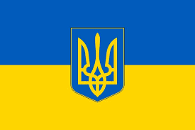

Discover Ukraine: A Brief Overview
Introduction
Nestled in Eastern Europe, Ukraine boasts a rich cultural heritage, stunning landscapes, and a complex history. Let's explore this diverse country!
Culture
- Ukrainian culture is deeply rooted in traditions, folklore, and arts.
- Traditional Ukrainian cuisine includes borscht, varenyky (dumplings), and salo (cured pork fat).
- Folk music, dance, and embroidery play significant roles in Ukrainian culture, with the country's vibrant festivals showcasing these traditions.
Culture: Embracing Tradition and Creativity
Ukrainian culture is a vibrant tapestry woven with threads of tradition and creativity. From colorful folk festivals to intricate embroidery, Ukraine's cultural heritage is deeply cherished and proudly celebrated.
Folk music and dance bring communities together, showcasing the country's rich musical heritage and energetic rhythms. Yet, alongside these cherished traditions, Ukraine's creative spirit thrives, with modern artists, musicians, and writers pushing boundaries and exploring new forms of expression. This fusion of tradition and innovation makes Ukrainian culture truly unique and continues to captivate audiences both at home and abroad.
Landmarks
- Kyiv Pechersk Lavra: A UNESCO World Heritage Site, this monastery complex is renowned for its underground caves and golden-domed churches.
- Lviv: Known as the "Little Paris of Ukraine," Lviv boasts a well-preserved historic center with stunning architecture and cozy cafes.
- Chernobyl Exclusion Zone: This site, infamous for the 1986 nuclear disaster, attracts visitors interested in exploring its eerie remains and learning about its tragic history.
Economy
- Ukraine has a diverse economy with sectors like agriculture, industry, and services.
- It is known as the "breadbasket of Europe" due to its fertile soils and extensive agricultural production.
- The country has been working to strengthen its economy and attract foreign investment, particularly in sectors like IT and renewable energy.
Conclusion
From its picturesque landscapes to its rich cultural heritage, Ukraine offers a wealth of experiences for visitors and residents alike. Despite its challenges, the country continues to evolve, showcasing its resilience and spirit.